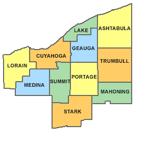

Owners Mike and John Otto have a lifelong history in the rendering industry with a total of 50+ years of combined experience. Otto By Products, Inc. is a family owned and operated company based out of Cleveland, Ohio. We provide service for waste cooking oils, grease trap cleaning, and fat and bone collection. We are committed to our customers and our community. We not only service the Northeast Ohio area, we live here too.
Otto By Products, Inc. is dedicated to the environment by recycling used fryer oil, grease trap material, fat and bone, and other waste products into raw materials that can be used to manufacture new everyday products. When choosing Otto By Products, Inc. for your grease removal, you can take pride in knowing that you're helping to preserve a cleaner Northeast Ohio. We see to it that these waste materials do not enter our streams, sewers or lakes. We recycle it to be used in useful items such as biodiesel, animal feeds, and soaps.
Our growth has been due to our customer loyalty and customer focus on our part. We hope to continue this growth by offering a full cycle of services to the restaurant & food related community.
Otto By Products, Inc. is committed to creating responsible recycling solutions for your waste cooking oils. Our company recycles your waste cooking oils into useable high-quality animal feed ingredients, soaps, and alternative fuels.
Otto By Products, Inc. continually strives to make the collection of your waste cooking oil a cleaner and safer process. Waste cooking oils are collected on a timely basis and completely removed and recycled in accordance with environmental regulations and laws.
Scheduled, low-cost grease trap cleaning avoids costly back-ups and unpleasant odors that interrupt your daily business operations. Scheduling grease trap cleaning keeps your business in compliance with local regulations and avoiding unnecessary fines. We pride ourselves in working hard to customize a schedule that meets the needs of your restaurant while not disrupting your business.
Otto By Products collects and recycles waste Fats & Bones from local butcher shop grocery stores and processing plants. Otto By Products knows the importance of being a dependable collection company. We will put your facility on a schedule that is suited for your needs.

Interested in working together? We are happy to answer any questions you may have about us or the services that we provide. The best time to reach us is during our normal work hours, which are 6AM-6PM Monday through Saturday. You can also reach us via email at any time and we will get back to you as soon as possible.
John Otto: Plant Manager
216-554-6886
john@ottobyproducts.com
Mike Otto: Service Manager
216-554-6886
mike@ottobyproducts.com
Brian Ashforth: Account Manager
216-904-2613
brian@ottobyproducts.com
Amanda Otto: Office Manager
amanda@ottobyproducts.com
Fax: 216-848-0365